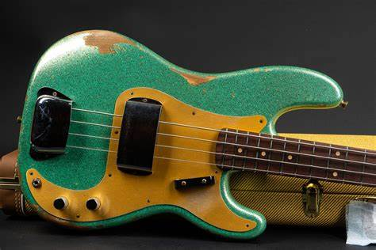
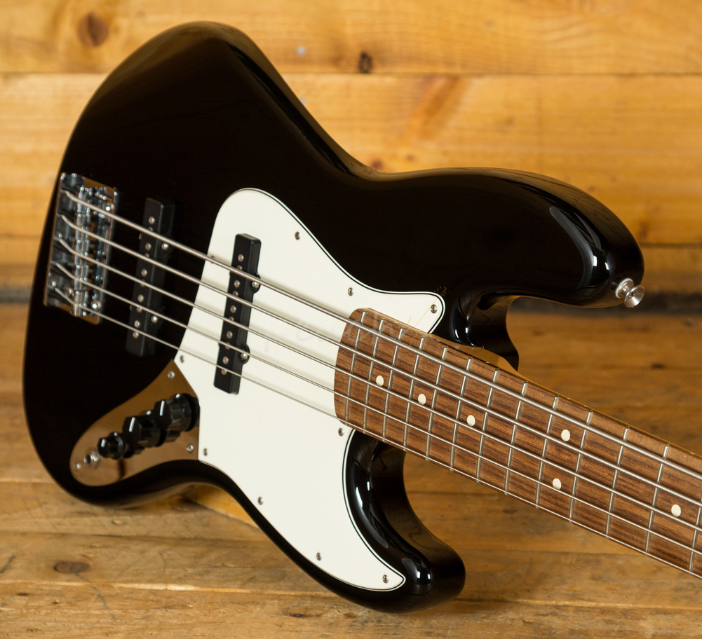

Welcome to the World of Classic Fender Basses
Explore the legend of Fender basses. Since the 1950s, Fender has been the choice of musicians around the world, offering instruments of unmatched quality.
Famous Models

Fender Precision Bass: Released in 1951, the Precision Bass was the first solid-body electric bass, changing music forever.

Fender Jazz Bass: Introduced in 1960, the Jazz Bass has a brighter sound and a thinner neck, ideal for musicians looking for versatility.